Personal belief
I believe that disability is not a single person's issue, but it is everyone's problem.
People with disability make up a large portion of the U.S. population - Around 27% people in USA have some kind of disability,
12.1% (40,327,794) people have serious mobility issues and 7.1% of these people have difficulty living independently.
While there are millions of products designed to help people in wheelchair to physically live a more
convenient life, we want them to find fulfillment while shopping groceries from the store, providing them the feeling of inclusivity and independence.

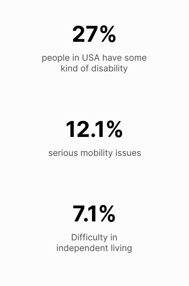
The initial quandary
How can we transform the in-store experience for people in wheelchairs?
First things first
To unravel the layers of this challenge, we conducted traditional
observations across varied grocery stores in Bloomington, Indiana.
We observed people with temporary as well as permanent mobility issues
to capture the essence of their shopping experience.

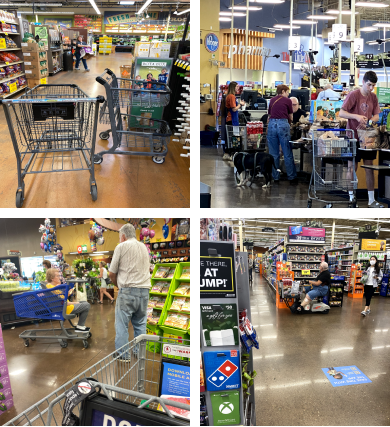
Photos clicked during traditional observations, You can view observation protocol and insights here
We leveraged affinity mapping and clustered observations based on similarity of issues

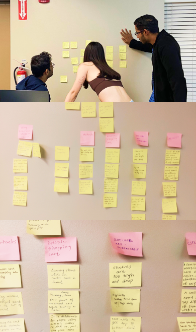
Issues in spotlight

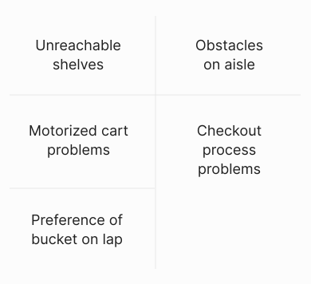
Investigation apart from observations
We conducted desk research to further investigate and understand the issues revolving around this problem space through:
-
YouTube Vlogs
-
Reddit & quora forums
-
Netnography
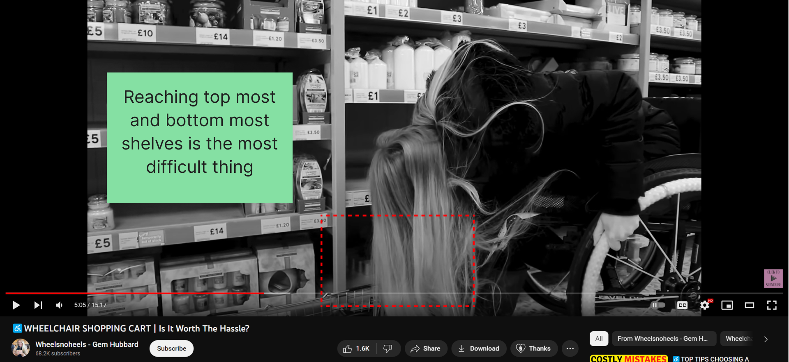
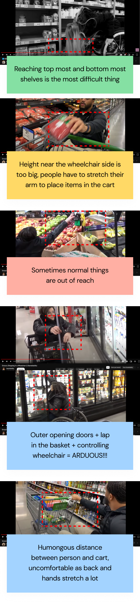
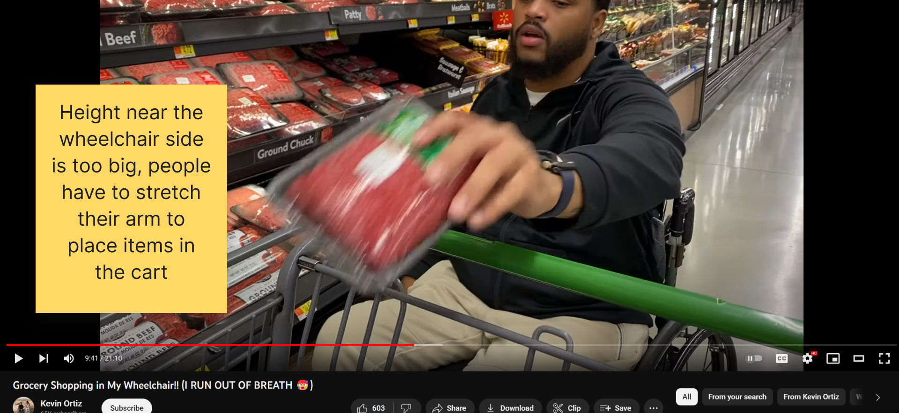
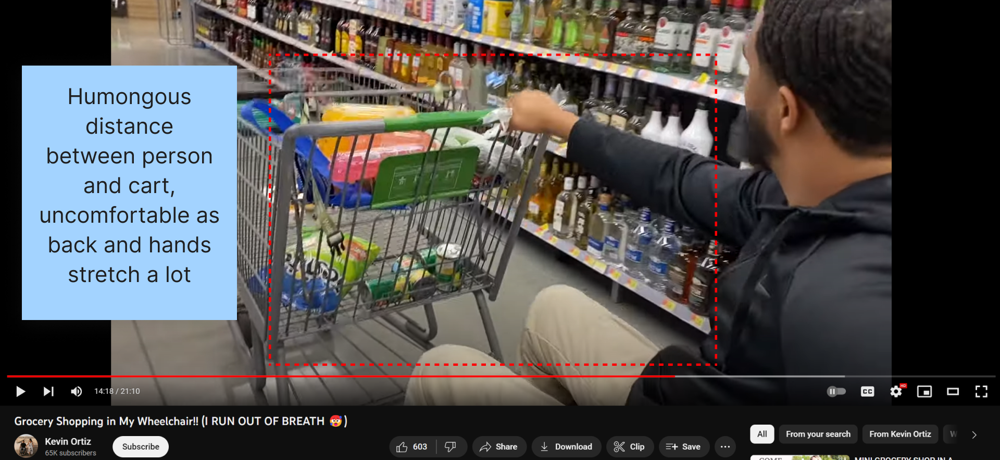
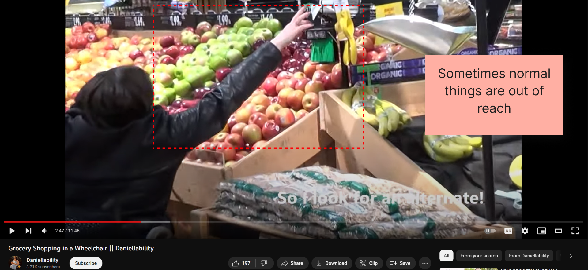
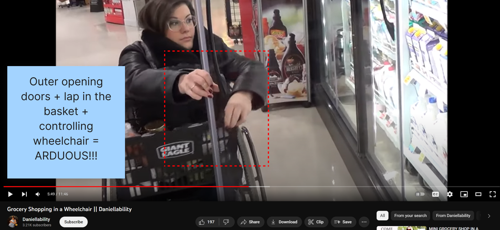
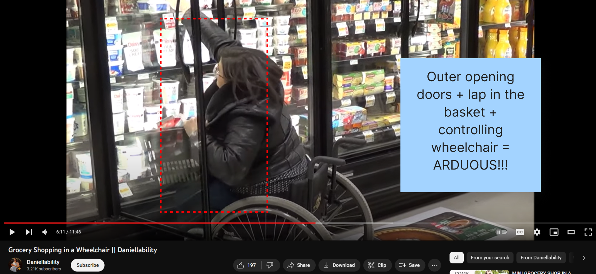

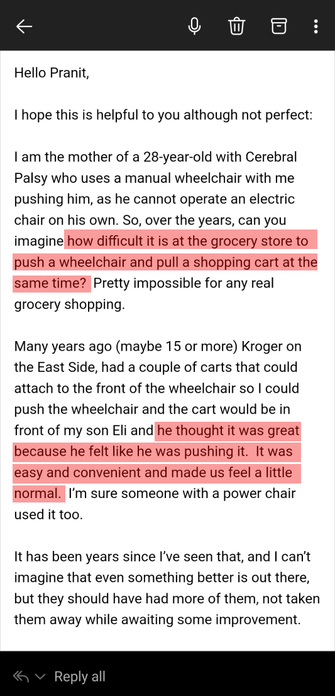
Fig: Email snapshot from a mother of 28-year-old with Cerebral Palsy
Some more issues in spotlight

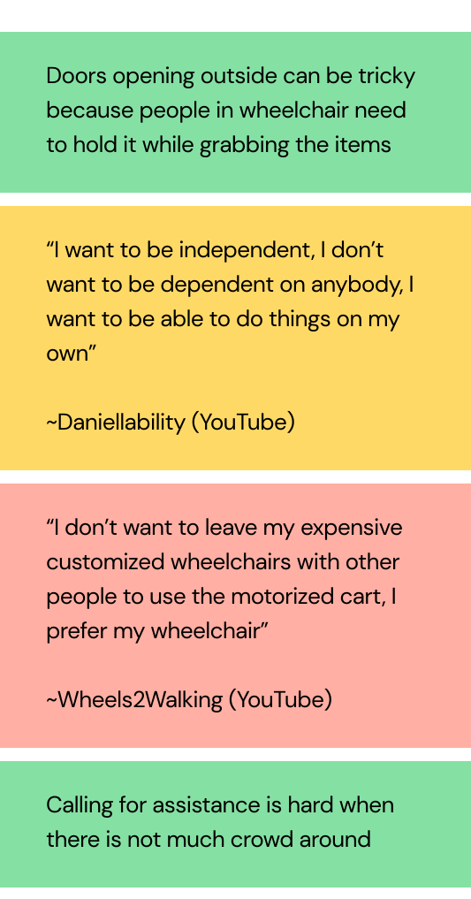
Need of the people in wheelchair
Need 1
Bruce, a 28 years old with cerebral Palsy needs to shop groceries on
his wheelchair and not on the motorized cart because he does not want to leave his
custom-made expensive wheelchair to be left somewhere in the store.
Need 2
Alexa, a 32 years old with knee injury needs to place bucket on her lap for shopping
because it is difficult for her to handle the cart and wheelchair at the same time.
Need 3
Ben, a 56 years old with multiple sclerosis needs to push the cart hard
because there are a lot of items in the cart and it is difficult to move the wheelchair and cart simultaneously.
Iterative sketching
We sketched to examine, explore & explain our thoughts and ideas
Exploration 1:
Attachable rods on normal cart

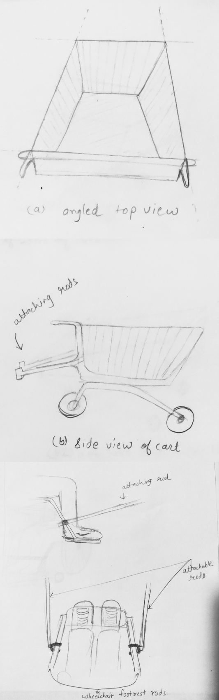
Fig: Exploring the placing of attachable rods on a traditional cart.
Problem:
Large distance between cart and person

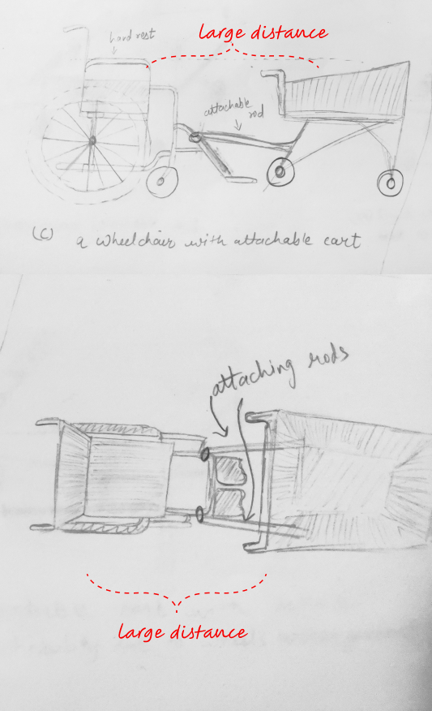
Fig: Traditional cart (left), Lower height at push handle (right)
Fixing problem:
Lowering height & minimizing the distance

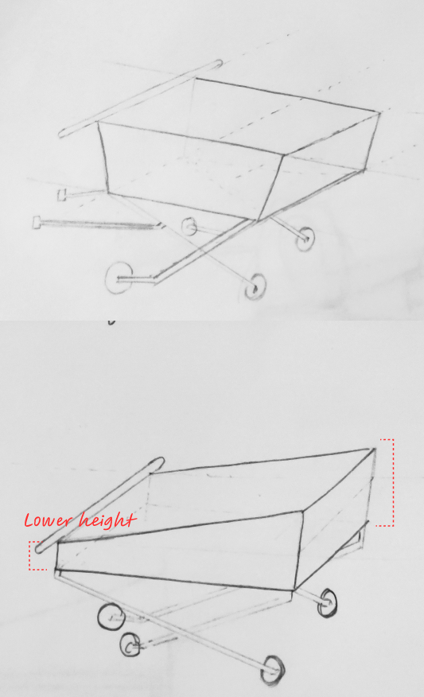
How did we minimize the distance?
Slideable cart till lap

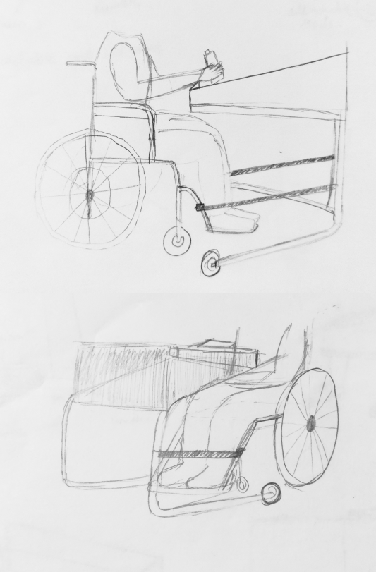
Fig: Cart which is slidable till the lap
Placing items in the cart and again taking them out during
self checkout is a hassle, especially when on the wheelchair.
What if everything was taken care by the cart?
Aha moment:
Queueless, attachable & smart cart for people in wheelchair

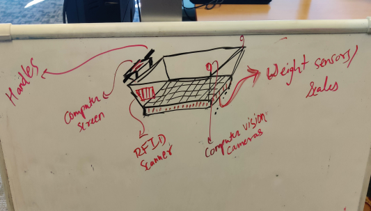
Fig: Ideation for a smart cart
Cart's maneuverability decreases as it fills up and becomes heavier.
This means individuals have to exert effort to move both the wheelchair and the loaded cart.
A feature like power assistance could be a valuable addition to address this challenge
Adding Power assist to the cart

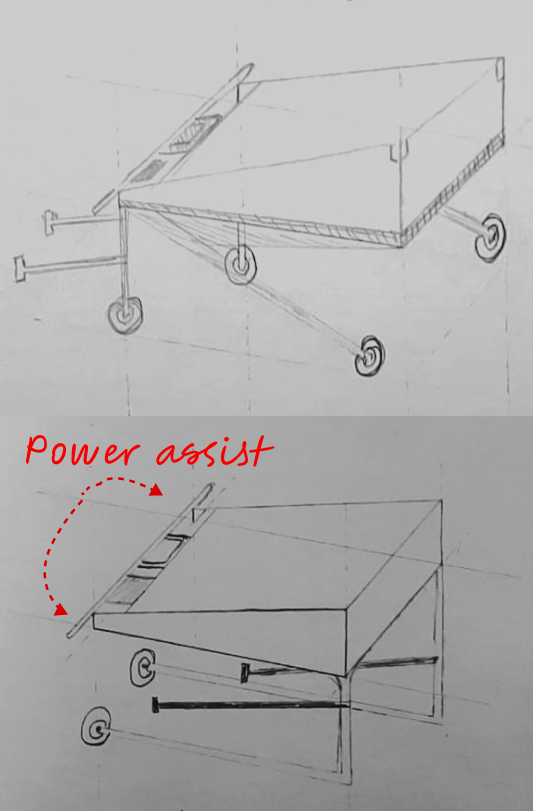
Fig: Power assist on attachable cart
Testing our concept
We visited Indiana institute on disability and community to recruit participants for testing our concept.

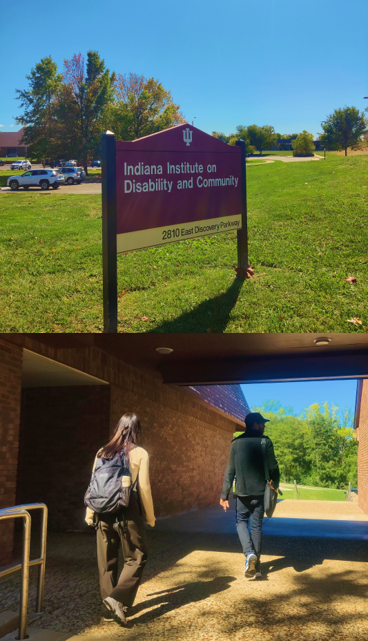
Fig: Visit to Indiana Institue on Disability and Community with Pranit and Harper
Mother of 28-year-old of with Cerebral Palsy reached out to volunteer for testing our concept

Fig: Explaining our concept to her and noting her feedbacks
Her valuable feedbacks for our concept

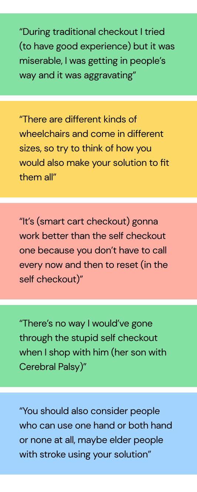
 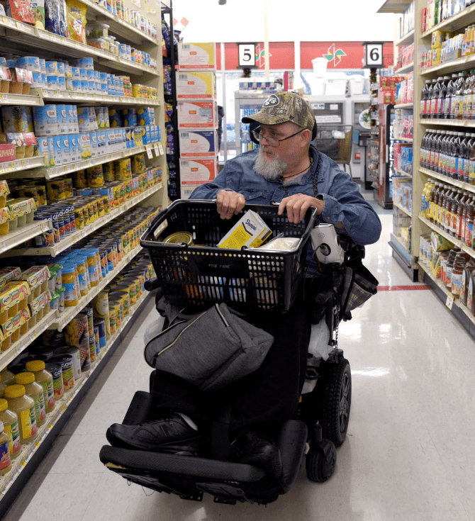
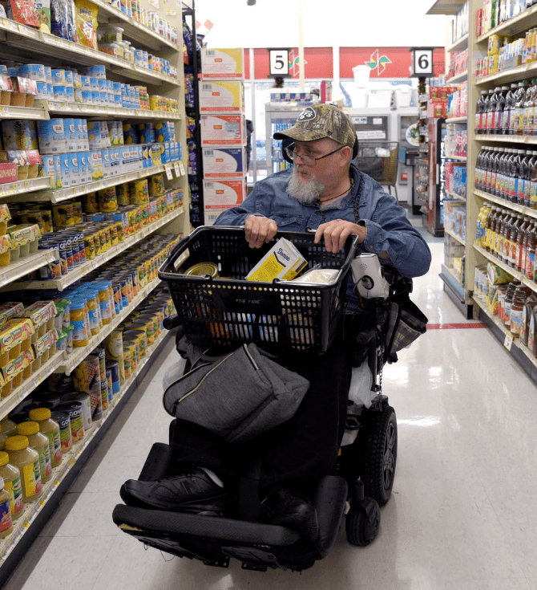